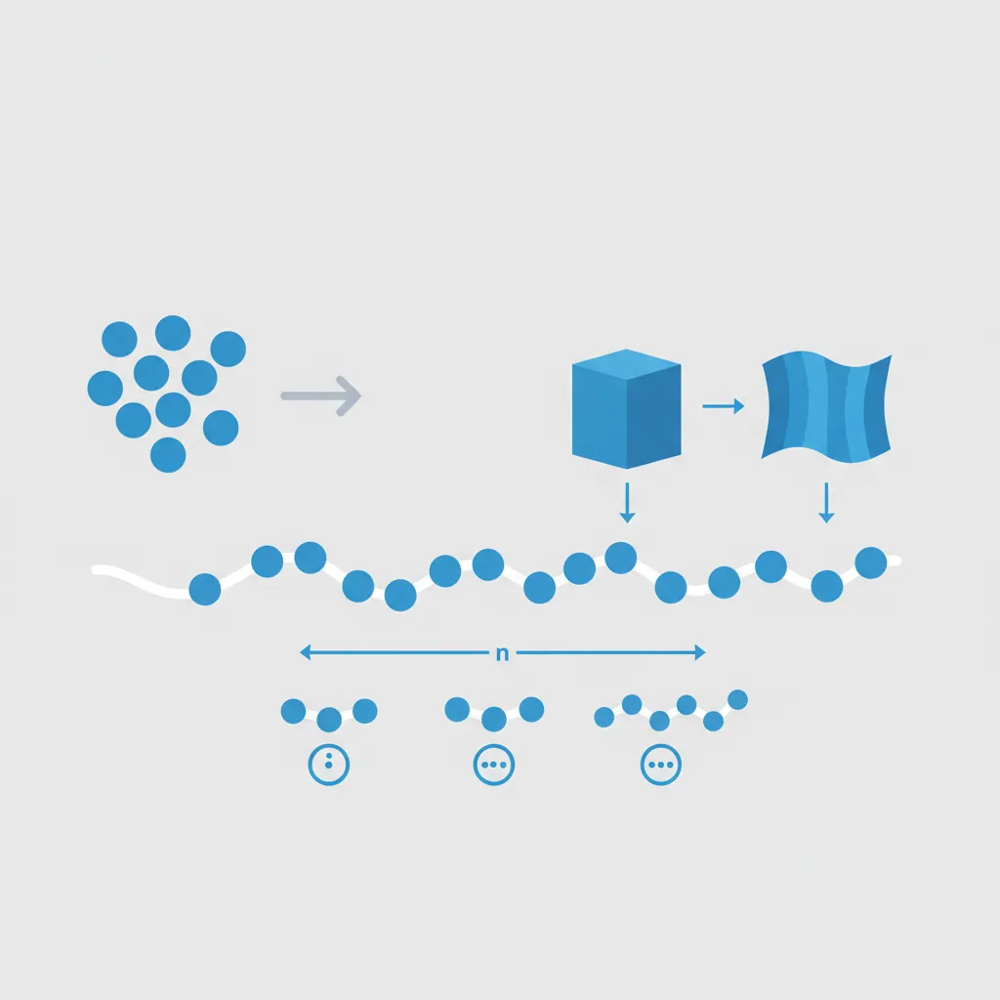
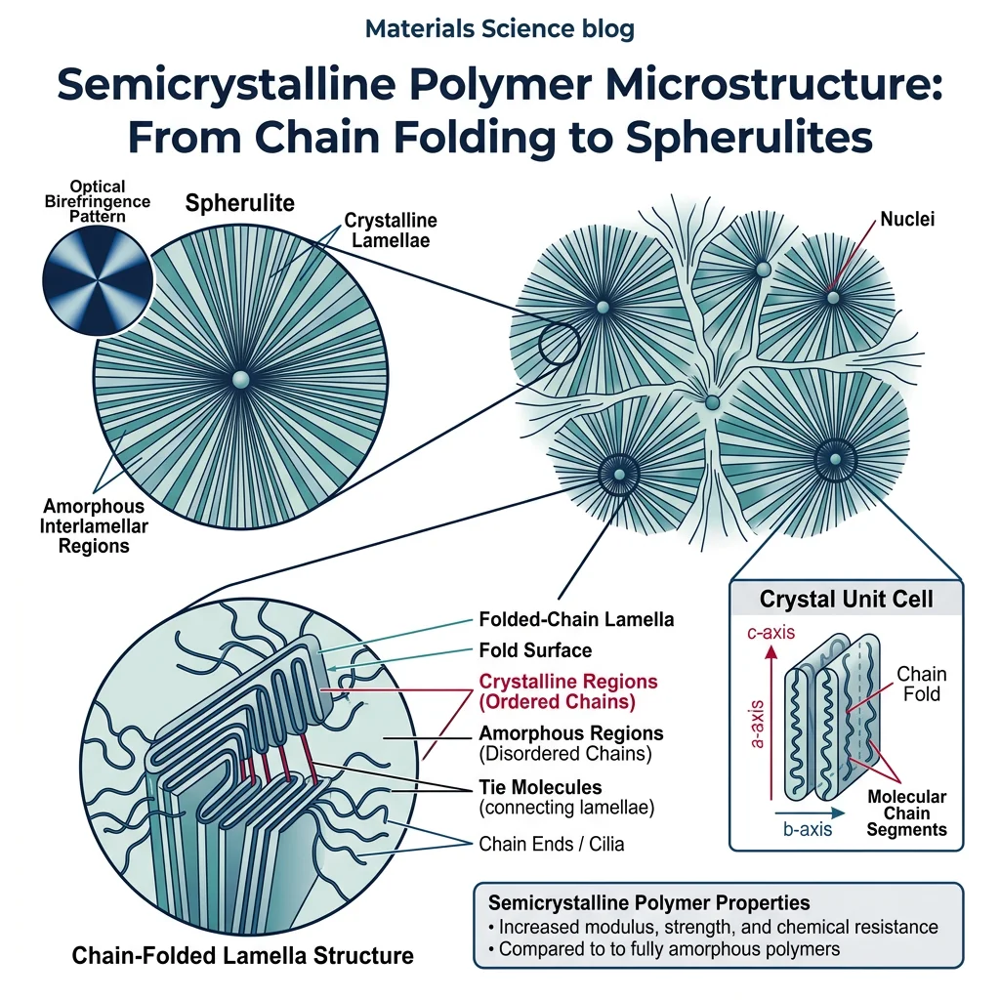
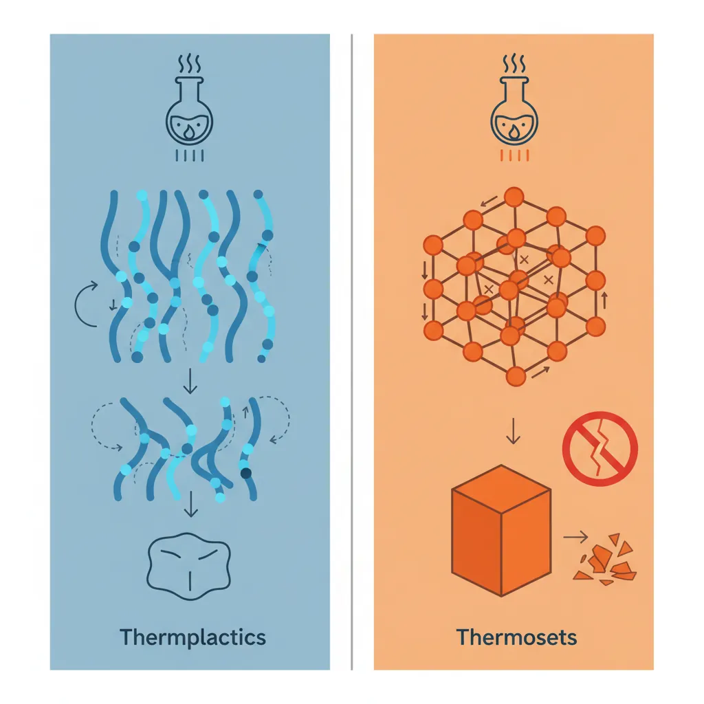
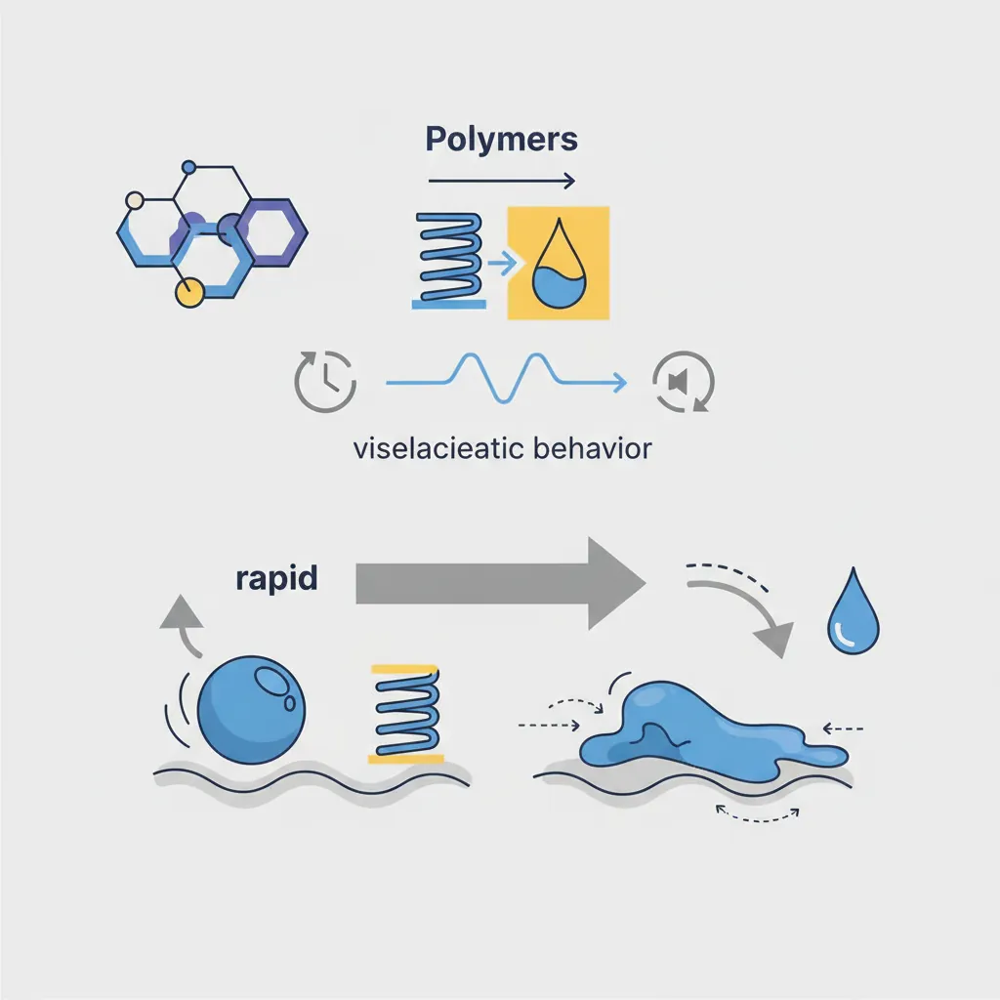
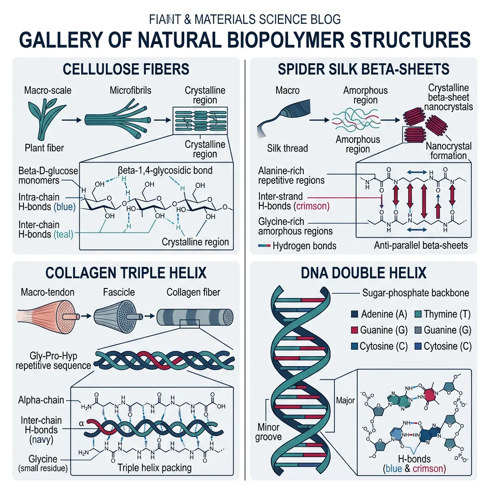

Polymer Chemistry & Structure
Materials Science Mastery
Atomic Structure & Quantum Foundations
Quantum mechanics, bonding, band theory, Fermi energy, phononsCrystal Structures, Defects & Diffusion
FCC/BCC/HCP, Miller indices, dislocations, phase diagrams, Fick's lawsMetals & Alloys
Iron-carbon diagram, steels, aluminum, titanium, superalloys, heat treatmentPolymers & Soft Materials
Polymer chemistry, thermoplastics, viscoelasticity, rheology, biopolymersCeramics, Glass & Composites
Oxide ceramics, toughening, fiber-reinforced composites, interfacial bondingMechanical Behavior & Testing
Stress-strain, hardness, fatigue, fracture toughness, nanoindentationFailure Analysis & Reliability Engineering
Fractography, corrosion, tribology, root cause analysisNanomaterials & Smart Materials
Nanotubes, graphene, piezoelectrics, shape memory alloys, self-healingMaterials Characterization Techniques
XRD, SEM, TEM, AFM, DSC, TGA, spectroscopyThermodynamics & Kinetics of Materials
Gibbs free energy, CALPHAD, phase stability, solidificationElectronic, Magnetic & Optical Materials
Semiconductors, photovoltaics, dielectrics, superconductorsBiomaterials
Implants, biocompatibility, tissue engineering, drug deliveryEnergy Materials
Battery materials, hydrogen storage, fuel cells, nuclear materialsComputational Materials Science
DFT, molecular dynamics, FEM, materials informatics, AIImagine a single strand of spaghetti — that's a monomer. Now picture an entire plate of tangled spaghetti — that's a polymer. The word itself comes from the Greek poly (many) and meros (parts). Polymers are giant molecules — macromolecules — built by linking thousands or even millions of small repeating units called monomers through covalent bonds.
Polymers are arguably the most versatile class of materials on Earth. From the DNA in your cells to the plastic bottle on your desk, from Kevlar body armor to biodegradable surgical sutures, polymers dominate modern life. Understanding how they're built and how their molecular architecture determines their properties is the key to designing next-generation soft materials.

Polymerization Reactions
There are two fundamental routes from monomers to polymers:
1. Addition (Chain-Growth) Polymerization: Monomers add one at a time to a growing chain, typically via a reactive intermediate (free radical, cation, or anion). No by-products are released. The classic example is polyethylene — ethylene monomers ($\text{CH}_2\text{=CH}_2$) open their double bonds and link end-to-end.
2. Condensation (Step-Growth) Polymerization: Two different functional groups react, and a small molecule (usually water) is released as a by-product. Nylon 6,6 forms when a diamine reacts with a dicarboxylic acid, releasing $\text{H}_2\text{O}$ at every linkage.
Chain Architecture
The way polymer chains are connected determines their properties dramatically:
- Linear: Chains like parallel ropes. Can slide past each other → flexible, can crystallize. Example: HDPE (high-density polyethylene).
- Branched: Side chains prevent tight packing → lower density, lower crystallinity. Example: LDPE (low-density polyethylene).
- Crosslinked: Chains connected by covalent bridges → cannot melt or dissolve, elastic. Example: vulcanized rubber.
- Network: Extensive 3D crosslinking → rigid, strong, brittle. Example: epoxy resin, Bakelite.
Copolymers
When two or more different monomers are combined, the arrangement matters:
- Random copolymer: –A–B–A–A–B–A–B–B– (monomers in random order)
- Alternating copolymer: –A–B–A–B–A–B– (strict alternation)
- Block copolymer: –AAAA–BBBBB–AAAA– (long sequences of each)
- Graft copolymer: A backbone with B side chains (like a tree trunk with branches of a different species)
Tacticity
For vinyl polymers with a substituent group R on every other carbon, the spatial arrangement of those groups along the chain is called tacticity:
- Isotactic: All R groups on the same side → regular, crystallizable (e.g., isotactic polypropylene — stiff, high melting point)
- Syndiotactic: R groups strictly alternating sides → also regular, crystallizable
- Atactic: R groups randomly placed → irregular, amorphous (e.g., atactic polystyrene — clear, glassy)
import numpy as np
# Compute degree of polymerization from molecular weights
# Degree of polymerization: n = M_polymer / M_monomer
# Example: Polyethylene (PE)
# Monomer: ethylene C2H4, M0 = 28 g/mol
# Typical PE molecular weight: 200,000 g/mol
M_monomer = 28.0 # g/mol (ethylene)
M_polymer = 200000.0 # g/mol (polyethylene sample)
n = M_polymer / M_monomer
print(f"Monomer molecular weight: {M_monomer} g/mol")
print(f"Polymer molecular weight: {M_polymer:,.0f} g/mol")
print(f"Degree of polymerization (n): {n:,.0f}")
print(f"\nThis means ~{n:,.0f} ethylene units are linked together")
print(f"in a single polyethylene chain.")
# Compare different polymers
polymers = {
"Polyethylene (PE)": (28, 200000),
"Polystyrene (PS)": (104, 300000),
"PVC": (62.5, 100000),
"Nylon 6,6": (226, 30000),
"PMMA": (100, 500000),
}
print(f"\n{'Polymer':<22} {'M_mono':>8} {'M_poly':>10} {'n':>8}")
print("-" * 52)
for name, (m0, mp) in polymers.items():
dp = mp / m0
print(f"{name:<22} {m0:>8.1f} {mp:>10,} {dp:>8,.0f}")
Nylon: The First Synthetic Fiber — Carothers' Revolutionary Step-Growth Polymer
In the 1930s, Wallace Carothers at DuPont set out to create a synthetic silk. His team reacted hexamethylenediamine with adipic acid — a step-growth condensation reaction releasing water at every bond formation. The result was Nylon 6,6, named for the 6 carbon atoms in each monomer.
Nylon fibers could be drawn to incredible strengths because the linear chains aligned and hydrogen-bonded between amide groups. When DuPont introduced nylon stockings in 1940, they sold 4 million pairs in four days. During WWII, nylon replaced silk in parachutes, ropes, and tire cords.
Why it matters: Carothers' work proved that polymers were real molecules (not colloidal aggregates, as many chemists believed) and laid the intellectual foundation for an entire industry. His equation relating molecular weight to conversion — $\bar{X}_n = \frac{1}{1-p}$ where $p$ is fractional conversion — remains a cornerstone of polymer science.
Molecular Weight Distribution
Unlike small molecules, polymers don't have a single molecular weight. A sample of polyethylene contains chains of many different lengths — some with 1,000 repeat units, others with 50,000. This spread is described by the molecular weight distribution.
Two key averages characterize this distribution:
Number-average molecular weight ($\bar{M}_n$): Counts each chain equally, regardless of size. Like a simple arithmetic mean of chain lengths:
$$\bar{M}_n = \frac{\sum N_i M_i}{\sum N_i}$$Weight-average molecular weight ($\bar{M}_w$): Weights each chain by its mass. Larger chains contribute more. Always $\bar{M}_w \geq \bar{M}_n$:
$$\bar{M}_w = \frac{\sum N_i M_i^2}{\sum N_i M_i}$$The ratio of these two averages is the polydispersity index (PDI or Đ):
$$\text{PDI} = \frac{\bar{M}_w}{\bar{M}_n} \geq 1$$- PDI = 1: All chains identical length (monodisperse) — ideal but rare
- PDI ~ 1.5–2.0: Typical for condensation polymers
- PDI ~ 2–5: Common for free-radical addition polymers
- PDI > 20: Very broad distribution — poor mechanical properties
How is MW distribution measured? The gold standard is Gel Permeation Chromatography (GPC), also called Size Exclusion Chromatography (SEC). The polymer solution flows through a column packed with porous beads. Small chains enter the pores and take longer; large chains are excluded and elute first. A detector records the concentration vs. elution time, which is converted to a MW distribution curve.
import numpy as np
import matplotlib.pyplot as plt
# Simulate a molecular weight distribution (log-normal)
np.random.seed(42)
# Generate 10,000 polymer chains with log-normal MW distribution
mu = np.log(100000) # Log of median MW
sigma = 0.6 # Breadth of distribution
molecular_weights = np.random.lognormal(mean=mu, sigma=sigma, size=10000)
# Calculate averages
Mn = np.mean(molecular_weights) # Number-average
Mw = np.sum(molecular_weights**2) / np.sum(molecular_weights) # Weight-average
PDI = Mw / Mn
print(f"Number-average MW (Mn): {Mn:,.0f} g/mol")
print(f"Weight-average MW (Mw): {Mw:,.0f} g/mol")
print(f"Polydispersity Index (PDI): {PDI:.2f}")
# Plot the distribution
fig, ax = plt.subplots(figsize=(9, 5))
ax.hist(molecular_weights / 1000, bins=80, density=True,
alpha=0.7, color='#3B9797', edgecolor='white', linewidth=0.5)
ax.axvline(Mn/1000, color='#BF092F', linewidth=2, linestyle='--', label=f'Mn = {Mn/1000:.0f}k')
ax.axvline(Mw/1000, color='#132440', linewidth=2, linestyle='-', label=f'Mw = {Mw/1000:.0f}k')
ax.set_xlabel('Molecular Weight (kg/mol)', fontsize=12)
ax.set_ylabel('Probability Density', fontsize=12)
ax.set_title(f'Molecular Weight Distribution (PDI = {PDI:.2f})', fontsize=14)
ax.legend(fontsize=11)
ax.set_xlim(0, 500)
plt.tight_layout()
plt.show()
Polymer Crystallinity
Most polymers are not fully crystalline or fully amorphous — they are semicrystalline. Imagine crumpling a bedsheet: some regions are neatly folded (crystalline), while others are tangled (amorphous). The fraction of crystalline material determines stiffness, density, transparency, and chemical resistance.
How do chains crystallize? Polymer chains fold back and forth to form flat plates called lamellae (typically 10–20 nm thick). These lamellae radiate outward from a central nucleus to form spherical structures called spherulites, visible under a polarized light microscope as beautiful Maltese-cross patterns. Think of it like folding a very long piece of paper accordion-style — the folds create an ordered, compact stack.

Factors Affecting Crystallinity
- Chain regularity: Simple, symmetric chains (PE, PTFE) crystallize easily. Bulky random side groups prevent it.
- Tacticity: Isotactic and syndiotactic polymers crystallize; atactic cannot.
- Cooling rate: Slow cooling allows time for chains to organize → higher crystallinity. Quenching freezes the amorphous state.
- Drawing/stretching: Mechanically aligning chains promotes crystallization (strain-induced crystallization).
- Molecular weight: Very high MW chains entangle more → harder to crystallize, but once crystallized they're tougher.
DSC Measurement: Differential Scanning Calorimetry measures the heat flow as a polymer is heated. The area of the melting peak, compared to a 100% crystalline reference, gives the percent crystallinity: $\%\ \text{crystallinity} = \frac{\Delta H_m}{\Delta H_m^0} \times 100$
• HDPE (high-density polyethylene): 70–80% crystalline — stiff, opaque, chemical-resistant bottles
• LDPE (low-density polyethylene): 40–55% crystalline — flexible, translucent films and bags
• PET (polyester): 30–50% crystalline — clear bottles (amorphous) or strong fibers (drawn, crystalline)
• Isotactic PP: 50–70% crystalline — tough automotive and packaging parts
• Atactic PS: ~0% crystalline — fully amorphous, clear, brittle (CD cases)
• Nylon 6,6: 35–45% crystalline — strong fibers and engineering plastics
• PTFE (Teflon): 60–80% crystalline — chemically inert, low friction
Polymer Classifications
The most fundamental division in polymer science is between the two great families: thermoplastics and thermosets.
Think of it like cooking. Chocolate is a thermoplastic — you can melt it, pour it into a mold, let it solidify, then remelt it and reshape it as many times as you like. An egg, once cooked, is a thermoset — the proteins have permanently crosslinked, and no amount of heating will turn it back into a raw egg.

Common Thermoplastics
- PE (polyethylene): Most produced plastic in the world — bags, bottles, pipes
- PP (polypropylene): Living hinge packaging, automotive, textiles
- PS (polystyrene): Disposable cutlery, insulation foam (Styrofoam)
- PVC (polyvinyl chloride): Pipes, window frames, flooring
- PET (polyethylene terephthalate): Drink bottles, polyester clothing
- PMMA (poly(methyl methacrylate)): Plexiglass, optical lenses
- PC (polycarbonate): Bulletproof glass, safety goggles, CDs
- Nylon (polyamide): Gears, bearings, textiles, zip ties
- PTFE (Teflon): Non-stick coatings, seals, chemical-resistant linings
Common Thermosets
- Epoxy: Adhesives, composite matrices (carbon fiber), coatings
- Phenolic (Bakelite): The first synthetic plastic — electrical insulators, pot handles
- Unsaturated polyester: Fiberglass boats, bath tubs, automotive body panels
- Polyurethane: Foams (mattresses, insulation), coatings, elastomers
- Silicone: Sealants, medical implants, cookware, lubricants
Properties Comparison
| Property | Thermoplastics | Thermosets |
|---|---|---|
| Melting behavior | Soften and flow on heating | Do not melt — decompose |
| Recyclability | Recyclable (remelt) | Not easily recyclable |
| Crosslinks | None (physical entanglements) | Extensive covalent crosslinks |
| Solubility | Dissolve in appropriate solvents | Insoluble (swell at most) |
| Creep resistance | Poor to moderate | Excellent |
| Processing | Injection molding, extrusion, thermoforming | Casting, compression molding, RTM |
| Typical cost | Low to moderate | Moderate to high |
Why PET Bottles Are Recyclable But Epoxy Isn't
PET (polyethylene terephthalate) is a thermoplastic. Its chains are held together by weak intermolecular forces. When you toss a PET bottle into a recycling bin, it gets shredded, washed, melted at ~260°C, and respun into new fibers or bottles. The chains stay intact — they just slide past each other when heated.
Epoxy resin, used in carbon fiber composites and structural adhesives, is a thermoset. During curing, a hardener creates permanent covalent crosslinks between chains, forming a rigid 3D network. Heating this network doesn't soften it — it chars and degrades. You cannot remelt an epoxy part any more than you can un-bake a cake.
The sustainability challenge: This is why composite recycling is one of the biggest unsolved problems in materials science. Researchers are developing "vitrimers" — thermosets with exchangeable crosslinks that can be reshaped at high temperature — bridging the gap between recyclable thermoplastics and high-performance thermosets.
Elastomers & Rubbers
Elastomers are a special class of polymers that can stretch to several times their original length and snap back when released. But what makes rubber stretchy? The answer is beautifully counterintuitive — it's driven by entropy, not energy.
In an unstretched rubber band, the polymer chains are randomly coiled — a high-entropy, disordered state. When you stretch the rubber, chains are forced to align — a low-entropy, ordered state. Thermodynamics demands that the system return to maximum entropy, so the chains pull back to their coiled configuration. The restoring force is essentially entropy trying to increase.
Natural vs Synthetic Rubber
- Natural rubber (NR): Polyisoprene harvested from Hevea brasiliensis trees. Excellent elasticity, poor heat and oil resistance.
- SBR (styrene-butadiene rubber): The most-produced synthetic rubber — car tires, shoe soles.
- NBR (nitrile rubber): Oil-resistant — gaskets, seals, gloves for automotive and chemical use.
- Silicone rubber: Temperature-stable from –60°C to +230°C — medical devices, cookware, aerospace seals.
- EPDM: Weather-resistant — automotive weatherstripping, roofing membranes.
Vulcanization — The Discovery That Launched an Industry
In 1839, Charles Goodyear accidentally dropped a mixture of natural rubber and sulfur onto a hot stove. Instead of melting into a sticky mess, the rubber became firm, elastic, and resilient. He had discovered vulcanization — the process of creating sulfur crosslinks between polyisoprene chains.
Unvulcanized rubber is sticky in summer and brittle in winter. The sulfur bridges (–S–S– bonds connecting adjacent chains) prevent chains from sliding past each other permanently, while still allowing the coiled segments between crosslinks to stretch and retract. The degree of vulcanization controls the material: light crosslinking produces a soft rubber band; heavy crosslinking produces hard ebonite used in bowling balls.
Modern impact: Without vulcanization, there would be no automobile tires, conveyor belts, or rubber seals. The global rubber industry — worth over $40 billion annually — rests on Goodyear's accidental discovery.
Glass Transition Temperature
If you could pick just one number to characterize a polymer, it would be its glass transition temperature ($T_g$). This is the temperature below which polymer chains are frozen in place (glassy, rigid, brittle) and above which they gain enough thermal energy to wriggle and slide (rubbery, flexible, tough).
$T_g$ is not a melting point — it's a transition in the amorphous regions. Think of honey: cold honey is stiff (glassy); warm honey flows (rubbery). The transition is gradual, occurring over a range of ~10–30°C.
What Shifts $T_g$?
- Backbone flexibility: Flexible chains (Si–O in silicones) → low $T_g$. Rigid chains (aromatic rings in polycarbonate) → high $T_g$.
- Bulky side groups: Large pendant groups restrict rotation → higher $T_g$ (e.g., PS has $T_g$ = 100°C due to phenyl groups).
- Polar interactions: Strong intermolecular forces (hydrogen bonds in nylon) → higher $T_g$.
- Crosslinking: More crosslinks restrict chain mobility → higher $T_g$.
- Plasticizers: Small molecules that slip between chains and push them apart → lower $T_g$ (this is how rigid PVC becomes flexible PVC).
• Silicone rubber (PDMS): $T_g$ ≈ –125°C — flexible at all practical temperatures
• Polyethylene (PE): $T_g$ ≈ –120°C — always above $T_g$ at room temperature
• Natural rubber: $T_g$ ≈ –70°C — rubbery at room temperature
• Nylon 6,6: $T_g$ ≈ 50°C — near room temperature (affected by moisture)
• PET: $T_g$ ≈ 70°C — glassy at room temperature → clear bottles
• PVC (unplasticized): $T_g$ ≈ 80°C — rigid pipes and frames
• Polystyrene (PS): $T_g$ ≈ 100°C — glassy, brittle at room temperature
• Polycarbonate (PC): $T_g$ ≈ 150°C — tough, transparent engineering plastic
• Polyimide (Kapton): $T_g$ ≈ 360°C — aerospace and electronics insulation
import numpy as np
import matplotlib.pyplot as plt
# Model the elastic modulus vs temperature showing glass transition
# Using a sigmoid function to approximate the Tg transition
def modulus_vs_temp(T, Tg, E_glassy=3e9, E_rubbery=1e6, width=15):
"""Approximate modulus (Pa) as a function of temperature.
Sigmoid transition centered at Tg."""
return E_rubbery + (E_glassy - E_rubbery) / (1 + np.exp((T - Tg) / width))
# Temperature range
T = np.linspace(-150, 250, 500)
# Three polymers with different Tg values
polymers = {
'Polyethylene (Tg = -120°C)': -120,
'PET (Tg = 70°C)': 70,
'Polycarbonate (Tg = 150°C)': 150,
}
colors = ['#3B9797', '#BF092F', '#132440']
fig, ax = plt.subplots(figsize=(10, 6))
for (name, tg), color in zip(polymers.items(), colors):
E = modulus_vs_temp(T, tg)
ax.semilogy(T, E, linewidth=2.5, color=color, label=name)
ax.axvline(tg, color=color, linestyle=':', alpha=0.5)
ax.axvline(25, color='gray', linestyle='--', alpha=0.6, label='Room Temp (25°C)')
ax.set_xlabel('Temperature (°C)', fontsize=12)
ax.set_ylabel('Elastic Modulus (Pa)', fontsize=12)
ax.set_title('Glass Transition: Modulus vs Temperature', fontsize=14)
ax.set_ylim(1e5, 1e10)
ax.legend(fontsize=10, loc='upper right')
ax.grid(True, alpha=0.3)
plt.tight_layout()
plt.show()
Mechanical Behavior
Polymers are neither purely elastic (like a steel spring) nor purely viscous (like honey). They are viscoelastic — their response depends on both the magnitude of the force and how fast it is applied. This dual nature is what makes polymers both fascinating and tricky to engineer with.
The classic demonstration is Silly Putty: throw it at a wall and it bounces (elastic response to fast loading); pull it slowly and it stretches and flows (viscous response to slow loading); leave a ball of it on a table overnight and it flattens under its own weight (creep).

Mechanical Models
Engineers use combinations of springs (elastic element, modulus $E$) and dashpots (viscous element, viscosity $\eta$) to model viscoelastic behavior:
Maxwell Model (spring + dashpot in series): Good for modeling stress relaxation — apply a constant strain and watch the stress decay exponentially over time. The relaxation time is $\tau = \eta / E$.
$$\sigma(t) = \sigma_0 \, e^{-t/\tau}$$Kelvin-Voigt Model (spring + dashpot in parallel): Good for modeling creep — apply a constant stress and watch the strain increase gradually toward an equilibrium value.
$$\varepsilon(t) = \frac{\sigma_0}{E}\left(1 - e^{-t/\tau}\right)$$import numpy as np
import matplotlib.pyplot as plt
# Maxwell Model: Stress Relaxation
# sigma(t) = sigma_0 * exp(-t / tau)
# tau = eta / E (relaxation time)
E = 1e9 # Elastic modulus (Pa) — 1 GPa, typical glassy polymer
eta = 1e12 # Viscosity (Pa·s)
tau = eta / E # Relaxation time (seconds)
sigma_0 = 10e6 # Initial stress (Pa) — 10 MPa
t = np.linspace(0, 5 * tau, 500)
sigma = sigma_0 * np.exp(-t / tau)
fig, (ax1, ax2) = plt.subplots(1, 2, figsize=(13, 5))
# Plot 1: Stress relaxation (Maxwell)
ax1.plot(t / tau, sigma / 1e6, linewidth=2.5, color='#BF092F')
ax1.axhline(sigma_0 / 1e6 / np.e, color='gray', linestyle='--', alpha=0.6,
label=f'σ₀/e at t = τ = {tau:.0f} s')
ax1.set_xlabel('Time (t / τ)', fontsize=12)
ax1.set_ylabel('Stress (MPa)', fontsize=12)
ax1.set_title('Maxwell Model: Stress Relaxation', fontsize=13)
ax1.legend(fontsize=10)
ax1.grid(True, alpha=0.3)
# Plot 2: Creep (Kelvin-Voigt model)
# epsilon(t) = (sigma_0 / E) * (1 - exp(-t / tau))
sigma_applied = 5e6 # Applied constant stress (Pa)
epsilon = (sigma_applied / E) * (1 - np.exp(-t / tau))
ax2.plot(t / tau, epsilon * 100, linewidth=2.5, color='#3B9797')
ax2.axhline((sigma_applied / E) * 100, color='gray', linestyle='--', alpha=0.6,
label=f'Equilibrium strain = {sigma_applied/E*100:.4f}%')
ax2.set_xlabel('Time (t / τ)', fontsize=12)
ax2.set_ylabel('Strain (%)', fontsize=12)
ax2.set_title('Kelvin-Voigt Model: Creep', fontsize=13)
ax2.legend(fontsize=10)
ax2.grid(True, alpha=0.3)
plt.tight_layout()
plt.show()
print(f"Relaxation time τ = η/E = {eta:.0e} / {E:.0e} = {tau:.0f} seconds")
print(f"At t = τ, stress drops to σ₀/e ≈ {sigma_0/np.e/1e6:.2f} MPa (37% of initial)")
The Deborah Number — When Does a Material Flow?
The Israeli physicist Markus Reiner proposed a dimensionless number to answer the question: is this material a solid or a liquid? The answer depends on how long you observe it.
The Deborah number is defined as: $De = \frac{\tau}{t_{obs}}$ where $\tau$ is the relaxation time and $t_{obs}$ is the observation time.
- $De \gg 1$ (fast observation): Material appears solid/elastic. A rubber ball bouncing ($t_{obs}$ ~ 0.01 s) vs rubber's relaxation time ($\tau$ ~ 100 s) → $De$ ~ 10,000 → elastic bounce.
- $De \ll 1$ (slow observation): Material appears to flow. The same rubber left on a shelf for years will slowly sag.
- $De \approx 1$: Viscoelastic behavior is most apparent. Silly Putty pulled at moderate speed.
The name references the prophetess Deborah in the Bible: "The mountains flowed before the Lord" (Judges 5:5) — even mountains flow if you wait long enough. The Deborah number reminds us that everything flows given enough time.
Rheology & Flow Behavior
Rheology is the science of flow and deformation. For polymer processing — extrusion, injection molding, blow molding, 3D printing — understanding how a polymer melt flows under different conditions is absolutely critical.
Newtonian vs Non-Newtonian Fluids
A Newtonian fluid (water, simple oils) has a constant viscosity regardless of how fast you shear it: $\tau = \eta \dot{\gamma}$ where $\tau$ is shear stress, $\eta$ is viscosity, and $\dot{\gamma}$ is shear rate. Most polymer melts are non-Newtonian.
Shear-thinning (pseudoplastic): Viscosity decreases with increasing shear rate. This is by far the most common behavior in polymer melts and solutions. Under high shear, entangled chains align in the flow direction and disentangle, reducing resistance. Real-world examples: ketchup (won't flow until you shake it), paint (flows smoothly under a brush but doesn't drip off the wall).
Shear-thickening (dilatant): Viscosity increases with shear rate. Much rarer but spectacular. The classic example is oobleck — a cornstarch-water suspension that you can walk on if you run, but sink into if you stand still. Under sudden impact, particles jam together and the suspension locks up.
The power-law model captures both behaviors:
$$\tau = K \dot{\gamma}^n$$where $K$ is the consistency index and $n$ is the flow behavior index. For shear-thinning, $n < 1$; for Newtonian, $n = 1$; for shear-thickening, $n > 1$.
Melt Flow Index (MFI): A practical polymer processing measurement — the mass (in grams) of polymer melt that flows through a standard die under a standard load in 10 minutes. High MFI = easy flow (good for thin-wall injection molding). Low MFI = high viscosity (good for blow molding, where you need the melt to hold its shape).
import numpy as np
import matplotlib.pyplot as plt
# Power-law fluid model: tau = K * gamma_dot^n
# Plot viscosity vs shear rate for different fluid types
gamma_dot = np.logspace(-1, 3, 200) # Shear rate (1/s)
K = 100 # Consistency index (Pa·s^n)
# Different flow behavior indices
fluids = {
'Shear-thinning (n=0.3)': 0.3,
'Shear-thinning (n=0.6)': 0.6,
'Newtonian (n=1.0)': 1.0,
'Shear-thickening (n=1.4)': 1.4,
}
colors = ['#BF092F', '#16476A', '#3B9797', '#132440']
fig, (ax1, ax2) = plt.subplots(1, 2, figsize=(13, 5))
for (name, n), color in zip(fluids.items(), colors):
tau = K * gamma_dot**n
eta_apparent = K * gamma_dot**(n - 1) # Apparent viscosity
ax1.loglog(gamma_dot, tau, linewidth=2.5, color=color, label=name)
ax2.loglog(gamma_dot, eta_apparent, linewidth=2.5, color=color, label=name)
ax1.set_xlabel('Shear Rate (1/s)', fontsize=12)
ax1.set_ylabel('Shear Stress (Pa)', fontsize=12)
ax1.set_title('Shear Stress vs Shear Rate', fontsize=13)
ax1.legend(fontsize=9)
ax1.grid(True, alpha=0.3)
ax2.set_xlabel('Shear Rate (1/s)', fontsize=12)
ax2.set_ylabel('Apparent Viscosity (Pa·s)', fontsize=12)
ax2.set_title('Viscosity vs Shear Rate', fontsize=13)
ax2.legend(fontsize=9)
ax2.grid(True, alpha=0.3)
plt.tight_layout()
plt.show()
print("Shear-thinning (n < 1): Viscosity DECREASES with shear rate")
print(" → Most polymer melts, ketchup, paint, blood")
print("Newtonian (n = 1): Viscosity is CONSTANT")
print(" → Water, simple oils, dilute solutions")
print("Shear-thickening (n > 1): Viscosity INCREASES with shear rate")
print(" → Cornstarch suspensions (oobleck), some ceramic slurries")
Polymer Degradation
All polymers degrade over time. Understanding degradation mechanisms is essential for predicting service life, designing stabilizer packages, and — increasingly — engineering controlled degradation for biodegradable materials.
Thermal Degradation
At elevated temperatures, polymer chains break apart via two main mechanisms:
- Random chain scission: Bonds break at random positions along the backbone. Molecular weight drops rapidly but monomer yield is low. Common in polyethylene and polypropylene — they become waxy and weak.
- Depolymerization (unzipping): The chain breaks apart from the end, regenerating monomer units one at a time. PMMA (acrylic) depolymerizes almost quantitatively above 300°C — which is why it can be chemically recycled by pyrolysis.
UV Degradation
Ultraviolet light provides enough energy (~300-400 kJ/mol for UV-A, more for UV-B) to break C–C and C–H bonds in polymer chains. This generates free radicals that initiate oxidative chain reactions. The result: yellowing, embrittlement, and cracking. Polypropylene is especially susceptible — outdoor PP products always contain UV stabilizers (HALS — hindered amine light stabilizers).
Oxidative Degradation
Oxygen reacts with free radicals on polymer chains to form peroxides and hydroperoxides, which decompose to generate more radicals — an autocatalytic chain reaction. Antioxidants (e.g., Irganox 1010, BHT) are added as sacrificial radical scavengers to break this cycle.
Hydrolytic Degradation
Polymers with hydrolyzable bonds (esters, amides, anhydrides) can be cleaved by water, especially in acidic or basic conditions. This is undesirable in nylon car parts exposed to moisture, but intentionally designed into biodegradable polymers like PLA (polylactic acid) and PGA (polyglycolic acid) used in absorbable surgical sutures.
Environmental Stress Cracking
Some polymers crack under combined mechanical stress and chemical exposure, even though neither alone would cause failure. HDPE bottles can crack when exposed to certain detergents under stress. Polycarbonate is sensitive to acetone and alkaline cleaners.
Biopolymers & Frontier Research
Nature invented polymers billions of years before we did. Biopolymers — polymers produced by living organisms — include some of the most remarkable materials known:

- Cellulose: The most abundant organic polymer on Earth. Every plant cell wall is made of cellulose — a linear chain of glucose units. Wood, cotton, and paper are cellulose-based.
- Chitin: The second most abundant biopolymer — found in insect exoskeletons, crustacean shells, and fungal cell walls.
- Silk: Spider dragline silk has a tensile strength of ~1.3 GPa — stronger than steel per unit weight — achieved through alternating crystalline β-sheet domains and amorphous flexible regions.
- Collagen: The most abundant protein in mammals (25–35% of total body protein). Its triple-helix structure provides tensile strength to skin, tendons, bones, and blood vessels.
- DNA: A double-stranded helical polymer of nucleotides — perhaps the most important polymer in existence, encoding the instructions for life itself.
Bioplastics
The growing urgency around plastic pollution has driven enormous interest in bio-based and biodegradable plastics:
- PLA (polylactic acid): Made from fermented corn starch or sugarcane. Compostable in industrial facilities (~60°C). Widely used in 3D printing and food packaging.
- PHA (polyhydroxyalkanoates): Produced by bacteria as energy storage granules. Truly biodegradable in soil and marine environments — but expensive.
- PBS (polybutylene succinate): Bio-based and compostable. Used in mulch films and food packaging.
Recycling: Mechanical vs Chemical
The circular economy for polymers depends on effective recycling:
- Mechanical recycling: Shred → wash → melt → repellet. Works well for clean, sorted single-polymer waste (PET bottles, HDPE containers). Each cycle degrades molecular weight slightly, limiting the number of reuse cycles.
- Chemical recycling: Break polymer back down to monomers or feedstock using pyrolysis, glycolysis, or enzymatic processes. Produces virgin-quality material but requires more energy. PET glycolysis and PMMA depolymerization are commercially viable.
PLA — From Corn Fields to 3D Printers
Polylactic acid (PLA) has one of the most elegant production cycles in materials science. Corn starch is fermented by bacteria to produce lactic acid. The lactic acid is then polymerized through ring-opening polymerization of lactide to produce high-molecular-weight PLA.
PLA has become the default 3D printing filament for hobbyists because it prints easily (low melting point ~180°C, minimal warping, no toxic fumes) and comes from renewable resources. It's also used in food packaging, disposable cups, and medical implants (PLA screws that dissolve as the bone heals).
The catch: PLA only biodegrades under industrial composting conditions (sustained 58–60°C with high humidity and microbial activity). In a landfill, ocean, or home compost bin, PLA can persist for decades — behaving much like conventional plastic. This gap between public perception ("compostable!") and reality is one of the biggest challenges in sustainable packaging.
Self-Healing Polymers
Imagine a material that repairs itself when damaged — like human skin healing a cut. Self-healing polymers are making this science-fiction concept a reality, and they broadly fall into two categories:
Extrinsic Self-Healing
Healing agents are pre-loaded into the material. When a crack forms, it ruptures the containers and releases the healing agent.
- Microcapsule approach (White et al., 2001): The landmark paper in Nature embedded micro-capsules filled with dicyclopentadiene (DCPD) monomer into an epoxy matrix, along with Grubbs' catalyst dispersed in the matrix. When a crack ruptured the capsules, DCPD flowed into the crack and polymerized on contact with the catalyst, rebonding the surfaces. Recovery of ~75% of original fracture toughness was demonstrated.
- Vascular networks: Instead of capsules (one-shot healing), hollow channels carry healing agent continuously — like blood vessels. Enables multiple healing events at the same location.
Intrinsic Self-Healing
The polymer itself has reversible bonds that can reform after breaking — no capsules or channels needed.
- Diels-Alder (DA) reversible crosslinks: Furan and maleimide groups form covalent bonds at room temperature but break apart at ~120°C (retro-DA reaction). Heat the damaged part → bonds break → chains become mobile → cool down → bonds reform. Fully reversible and repeatable.
- Supramolecular polymers: Chains held together by hydrogen bonds, metal-ligand coordination, or π-π stacking instead of covalent bonds. These non-covalent bonds are individually weak but collectively strong, and they can re-form spontaneously at room temperature.
- Vitrimers: Thermoset-like polymers with exchangeable crosslinks. At elevated temperature, bonds rearrange (associative exchange) without net loss of crosslinks — the material can be reshaped like a thermoplastic while maintaining thermoset-like mechanical properties.
Conductive & Biodegradable Polymers
For most of polymer history, the assumption was simple: polymers are insulators. Polyethylene insulates electrical cables; PVC coats wires; rubber gloves protect electricians. Then, in 1977, three chemists — Alan Heeger, Alan MacDiarmid, and Hideki Shirakawa — discovered that polyacetylene, when doped with iodine vapor, becomes as conductive as some metals. This discovery earned them the 2000 Nobel Prize in Chemistry.
How Do Polymers Conduct?
Conjugated polymers have alternating single and double bonds along their backbone (–C=C–C=C–). This creates a continuous system of overlapping p-orbitals — a "highway" for electrons. In their pristine state, these polymers are semiconductors. Chemical or electrochemical doping — adding or removing electrons — converts them into conductors.
Key conducting polymers:
- Polyacetylene: The original — high conductivity when doped, but unstable in air
- PEDOT:PSS: The workhorse of organic electronics — transparent, flexible, processable from water. Used in almost every OLED display and organic solar cell as a hole-transport layer.
- Polyaniline (PANI): Easy to synthesize, tunable conductivity, anti-corrosion coatings
- Polypyrrole (PPy): Biocompatible — used in neural interfaces and biosensors
- Polythiophenes (P3HT): Organic solar cell active layers
Applications
- Flexible OLEDs: Your phone's curved display uses organic semiconducting polymers as light-emitting layers. Polymer OLEDs can be printed using inkjet technology — enabling roll-to-roll manufacturing of displays.
- Organic solar cells: Semiconducting polymers mixed with fullerene or non-fullerene acceptors create bulk heterojunction solar cells — flexible, lightweight, and manufacturable at low cost. Efficiencies now exceed 19%.
- Wearable sensors: Conductive polymer films on flexible substrates can detect strain, pressure, temperature, and chemical analytes — enabling e-skin for prosthetics and health monitoring.
- Thermoelectric generators: PEDOT-based polymers can convert waste heat to electricity — low efficiency but ultra-low cost and flexible.
Biodegradable Polymers for Packaging: Degradation Timeline
How long do common polymers take to degrade in the environment?
| Material | Degradation Time | Notes |
|---|---|---|
| Paper bag | 1–3 months | Cellulose — readily biodegradable |
| PHA packaging | 3–6 months | Biodegradable in soil and marine |
| PLA cup | 6–24 months | Only in industrial composting (>58°C) |
| Nylon fabric | 30–40 years | Slow hydrolytic and microbial attack |
| HDPE bottle | 100+ years | UV degradation → fragmentation → microplastics |
| PET bottle | 400+ years | Extremely resistant to biodegradation |
| PS (Styrofoam) | 500+ years | Essentially permanent in landfills |
OLED Displays — Polymers That Emit Light
Every time you look at a Samsung Galaxy display, you're looking through millions of organic light-emitting diodes — tiny pixels made from conjugated polymer or small-molecule thin films sandwiched between electrodes.
When voltage is applied, electrons and holes are injected from opposite electrodes. They travel through charge-transport layers (PEDOT:PSS is the standard hole-transport material) and recombine in the emissive layer, releasing energy as visible light. By tuning the polymer's chemical structure (and thus its bandgap), engineers control the emission color: red, green, and blue sub-pixels create the full-color images you see.
Why polymers? Unlike inorganic LEDs that require high-temperature vacuum deposition on rigid substrates, polymer OLEDs can be dissolved in solvents and printed like ink onto flexible plastic sheets. This enables foldable phones, rollable TVs, and — eventually — electronic wallpaper that serves as your room's light source and display simultaneously.
Exercises & Applications
Test your understanding of polymers and soft materials with these practice problems. Work through them to reinforce the concepts covered in this article.
A sample of polystyrene (PS) has a number-average molecular weight $\bar{M}_n$ = 208,000 g/mol. The molecular weight of the styrene monomer ($\text{C}_8\text{H}_8$) is 104 g/mol.
(a) Calculate the degree of polymerization ($n$).
(b) If the weight-average molecular weight $\bar{M}_w$ = 416,000 g/mol, what is the PDI?
(c) Is this a narrow or broad distribution? What polymerization method likely produced it?
Answers: (a) $n = 208{,}000 / 104 = 2{,}000$ repeat units. (b) PDI = $416{,}000 / 208{,}000 = 2.0$. (c) PDI = 2.0 is typical for conventional free-radical polymerization. A living polymerization would give PDI < 1.3.
You're designing a plastic component that must remain rigid at room temperature (25°C) but flexible at 80°C. From the following candidates, which polymer(s) would satisfy both requirements?
• PE ($T_g$ ≈ –120°C) • PVC ($T_g$ ≈ 80°C) • PS ($T_g$ ≈ 100°C) • PET ($T_g$ ≈ 70°C) • Nylon 6,6 ($T_g$ ≈ 50°C)
Answer: PET ($T_g$ ≈ 70°C) is glassy (rigid) at 25°C and rubbery (flexible) at 80°C — ideal. PVC ($T_g$ ≈ 80°C) transitions right around 80°C so it would also begin to soften. PE is already rubbery at 25°C (too flexible). PS remains glassy at 80°C (not flexible enough). Nylon is between glassy and rubbery at 25°C but affected by moisture.
A polymer with modulus $E = 2$ GPa and viscosity $\eta = 5 \times 10^{11}$ Pa·s is stretched to an initial stress of 20 MPa and held at constant strain.
(a) Calculate the relaxation time $\tau$.
(b) What is the stress after 500 seconds?
(c) How long until the stress drops to 1 MPa?
Answers: (a) $\tau = \eta/E = 5 \times 10^{11} / 2 \times 10^9 = 250$ s. (b) $\sigma(500) = 20 \times e^{-500/250} = 20 \times e^{-2} \approx 2.71$ MPa. (c) $1 = 20 e^{-t/250}$ → $t = -250 \ln(1/20) = 250 \ln(20) \approx 749$ s ≈ 12.5 min.
You need to select a polymer for each application. Justify your choice based on the properties discussed:
(a) A transparent, shatter-resistant safety shield for a machine guard
(b) A flexible gasket that must resist engine oil at 150°C
(c) A biodegradable single-use food container
(d) A structural adhesive bonding carbon fiber panels in an aircraft wing
Answers: (a) Polycarbonate (PC) — $T_g$ = 150°C, excellent impact resistance, optically clear. (b) NBR (nitrile rubber) or silicone rubber — both oil-resistant; silicone handles 150°C easily. (c) PLA for industrial composting, or PHA if soil/marine biodegradation is needed. (d) Epoxy thermoset — high strength, chemical resistance, bonds well to carbon fiber, but cannot be recycled.
A grocery chain wants to replace its HDPE shopping bags with a biodegradable alternative. Compare PLA and PHA for this application, considering:
(a) Raw material source and cost
(b) Mechanical properties (strength, flexibility)
(c) End-of-life degradation pathway
(d) Consumer behavior (how bags are actually disposed of)
Answer: PLA is cheaper (corn starch) and processable but is stiff and brittle (like PS, not like PE) and only composts industrially — most consumers will landfill it, where it won't degrade for decades. PHA is flexible (closer to PE feel) and biodegrades in home compost, soil, and marine environments, but costs 3–5× more. Neither is a perfect drop-in replacement. The real solution may be reusable bags or chemically recycled HDPE. This illustrates why polymer selection requires full life-cycle analysis, not just "is it biodegradable?"
You want to create a rubber that is oil-resistant (like NBR) but also bonds well to nylon reinforcement layers. You propose a graft copolymer with an NBR backbone and nylon side chains.
(a) What type of copolymer architecture is this?
(b) Why would this design improve adhesion to nylon reinforcement?
(c) What processing challenge would you expect?
Answers: (a) Graft copolymer — the backbone (NBR) is a different polymer from the side chains (nylon). (b) The nylon side chains can form hydrogen bonds and even co-crystallize with the nylon reinforcement layer, creating strong interfacial adhesion — "like dissolves like" at the molecular level. (c) NBR is an elastomer processed at ~150°C, but nylon melts at ~260°C. Grafting requires careful control of temperature and reaction conditions to avoid degrading the rubber backbone while the nylon side chains are formed.
Conclusion & Next Steps
Polymers are the most diverse and versatile class of engineering materials. From single monomers, nature and chemists build macromolecules whose properties span an astonishing range — from ultra-soft hydrogels to bulletproof Kevlar fibers, from insulating cable coatings to conducting polymer LEDs, from permanent thermoset adhesives to self-healing coatings that repair themselves in sunlight.
The key themes connecting everything in this guide are: molecular architecture determines properties (linear vs branched vs crosslinked, tacticity, copolymer arrangement), time and temperature matter ($T_g$ governs whether a polymer is glassy or rubbery; viscoelastic models capture time-dependent behavior), and sustainability is driving innovation (biopolymers, chemical recycling, vitrimers, and self-healing materials are reshaping the polymer landscape).
In the next installment, we shift from soft materials to hard ones — and discover how ceramics, glasses, and composite materials combine the best properties of multiple material classes to achieve performance that no single material can match alone.